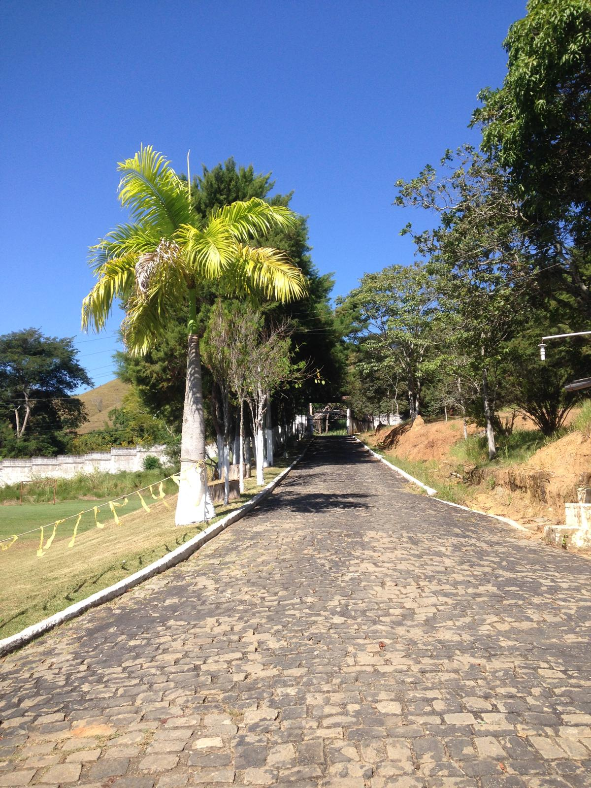

~180 m² disponíveis para locação de torre de telecomunicação (ERB/5G) em Cambota, Valença/RJ. Acesso pela Estrada Valença–Rio das Flores. Coordenadas GPS e altitude via dossiê. Contrato de superfície por 15 anos.
O terreno Chácara Recanto do Padre Tomás, em Cambota, Valença/RJ, reúne os critérios técnicos e operacionais que operadoras e infrastruturas (infrascos) de telecomunicação buscam ao prospectar novos sites candidatos no interior do Rio de Janeiro.
O Plano Nacional de Telecomunicações e os compromissos de cobertura firmados com a Anatel exigem que as operadoras densifiquem sua rede no interior do Brasil até 2026–2028. No sul fluminense, a cobertura 5G ainda é fragmentada, com gaps especialmente entre cidades médias como Valença, Vassouras e Piraí.
Empresas de infraestrutura de torres (SBA Comunicações, American Tower, Highline, TowerCo) e as próprias operadoras (Claro, TIM, Vivo) estão em processo ativo de aquisição e locação de sites candidatos na região. Sites aprovados em 2026 entram no pipeline de implantação 2026–2027.
O terreno está na Estrada Valença–Rio das Flores, com acesso direto por via pública, energia elétrica disponível (concessionária Light, área de concessão confirmada para Valença/RJ) e topografia favorável. A localização em Cambota, ao sul do núcleo urbano central de Valença, preenche um vetor de expansão natural de cobertura.
O terreno é compatível com o modelo de Compartilhamento de Uso Coletivo (CUC), regulamentado pela Anatel, em que uma única torre é usada por múltiplas operadoras. Isso aumenta a renda potencial do proprietário (renda por operadora adicional) e reduz o custo de implantação para cada operadora.
Valores estimados com base em contratos de locação de ERB no interior do RJ (mai/2026). Renda real depende de negociação com a operadora/infraco e resultado da análise de RF. Não constitui garantia.
O processo de instalação de uma ERB em terreno privado é conduzido e financiado pela operadora ou infraco. O proprietário não tem custo.
Com coordenadas GPS e altitude, o engenheiro de radiofrequência da operadora roda simulação de propagação de sinal. Sem visita ao terreno. Resposta em 1 a 4 semanas.
Se o site passar na análise de RF, a equipe de engenharia visita o terreno para avaliar solo, declividade, acesso e viabilidade de energia. Por conta da operadora.
Operadora ou infraco apresenta proposta com valor, prazo, área cedida e cláusulas. Proprietário pode negociar com auxílio de advogado.
Contrato registrado em cartório. Prazo de 15 anos, reajuste IPCA anual, cláusula de renovação. Renda começa a partir da assinatura ou da ativação da torre.
Operadora/infraco cuida de projeto, licença ambiental, obra e manutenção. Proprietário apenas recebe a renda mensal.
O leilão 5G de 2021 da Anatel estabeleceu obrigações de cobertura que as operadoras precisam cumprir progressivamente até 2029. Uma das obrigações é levar 5G a municípios com mais de 30 mil habitantes até determinados prazos — o que inclui Valença/RJ (~75 mil habitantes).
O processo de densificação de rede no interior passa obrigatoriamente pela identificação e contratação de novos sites candidatos. As infrascos (empresas especializadas em infraestrutura de torre, como SBA, American Tower e Highline) estão prospecção ativa no sul fluminense desde 2024.
Sites em bairros periféricos de cidades médias — como Cambota em relação ao centro de Valença — são estratégicos para as operadoras porque preenchem gaps de cobertura de forma econômica, sem a concorrência e o custo de sites urbanos centrais.
O que torna este site candidato relevante para operadoras:
Para apresentar este site a uma operadora ou infraco, o passo inicial é compartilhar as coordenadas GPS e altitude do terreno — dados disponíveis no dossiê técnico mediante solicitação.
O proprietário cede uma área de ~180 m² por contrato de superfície registrado em cartório. A operadora ou infraco instala, opera e mantém a torre. O proprietário recebe renda mensal fixa com reajuste IPCA anual, tipicamente por 15 anos com cláusula de renovação. O proprietário não tem custo de instalação nem operação — tudo por conta da operadora.
Sim. O interior do RJ, incluindo o sul fluminense, está em processo ativo de densificação de sites 5G. Operadoras como Claro, TIM e Vivo estão buscando pontos candidatos em cidades médias. Valença, como polo regional com ~75 mil habitantes, é candidata natural a receber novos sites ERB para cumprir obrigações de cobertura do leilão 5G de 2021.
Os critérios principais são: localização em área de gap identificado, altitude favorável para propagação, acesso por via pública, energia elétrica disponível, área mínima de ~100 m² (preferencialmente 180 m²) e documentação do imóvel em ordem. O terreno em Cambota atende todos esses requisitos.
A renda estimada para locação de ERB no interior do RJ é de R$3.000 a R$8.000/mês por operadora, dependendo da localização estratégica. Para este terreno em Valença, a estimativa é de ~R$6.000/mês (1 operadora). No modelo CUC (2 operadoras), a renda estimada sobe para R$9.000–R$12.000/mês.
Praticamente não. A área cedida (~180 m²) representa menos de 2% dos 10.000 m² do terreno. Os outros 98% continuam disponíveis para incorporação residencial, usina solar ou agronegócio simultâneos. A renda de telecomunicação funciona como receita complementar, não excludente. Ver todas as oportunidades do terreno.
O primeiro passo é ter em mãos as coordenadas GPS (WGS84) e altitude do terreno, que são os dados necessários para o engenheiro de RF rodar a simulação de propagação remotamente. Esses dados estão disponíveis no dossiê técnico do imóvel — solicite pelo formulário em terrenovalenca.com.br.
Coordenadas GPS, altitude, documentação e mapa de localização disponíveis no dossiê técnico. Proprietária avalia propostas de operadoras e infrascos diretamente.
Também pode interessar: Terreno para incorporação MCMV em Valença RJ